Esta página ya no se mantiene más (06/Diciembre/2009)
|
MÓDULOS Y1 |
|
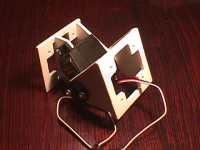 |
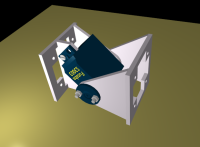 |
|
|
Esta página ya no se mantiene más (06/Diciembre/2009) |
Primera generación de módulos mecánicos para la construcción de robots modulares conectados en cadena (chain robots), como por ejemplo gusanos o serpientes. Son sencillos, abiertos y fáciles de construir. Están disponibles todos los planos y el modelo virtual en 3D.
Desarrollados como parte del proyecto Cube Reloaded y han sido empleados en la construcción de Cube Revolutions.
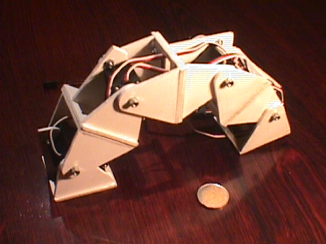
Fácil construcción
Material: Prototipos realizados con PVC expandido de 3mm. También se ha construido uno de metacrilato. Se puede usar también madera o cualquier material plástico, con un grosor de 3 mm
Grados de libertad: 1.
Basado en el servo Servos Futaba 3003
Abiertos: Toda la información está disponible en la sección de download y se concede permiso explícito para su uso, modificación y distribución
Conexión en fase o desfase. Esta características es la más importante. La unión de módulos se puede realizar de dos formas
Conexión en fase: Los dos módulos tienen la misma orientación
Conexión en desfase: Los módulos están girados 90 grados
|
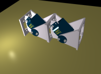 |
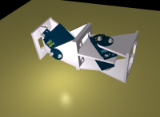 |
|
Conexión en Fase |
Conexión en Desfase |
El módulo está dividido en dos partes, que pueden rotar una con respecto a la otra:
Cuerpo: parte donde está atornillado el servo
Cabeza: parte atornillada por un lado a la corona del servo y por el otro al cuerpo, formando un "falso eje" que permite que el peso se reparta mejor
En el siguiente dibujo se muestran las distintas partes y cómo rota la cabeza con respecto al cuerpo
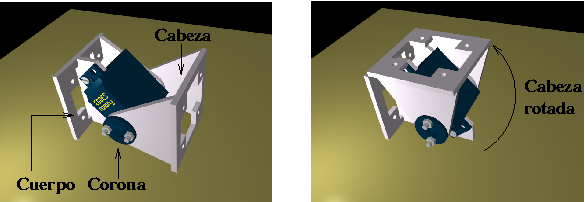
En el siguiente dibujo se muestra el módulo visto por el otro lado
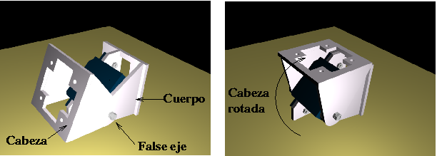
El módulo está constituido por 5 piezas diferentes, que se pegan para formar la cabeza y el cuerpo. La nomenclatura empleada es:
Cuerpo:
Pieza F: donde va atornillado el servo
Pieza B1: Base del cuerpo. Punto de unión con otro módulo
Pieza FE: Pieza del falso eje. Se une a la otra pieza FE de la cabeza
Cabeza:
Pieza B2: Base de la cabeza. Punto de unión con otro módulo
Pieza E: atornillada al eje del servo (su corona)
Pieza FE. Igual que la del cuerpo
Los planos se han realizado con el programa QCAD , que es software libre. Están en formato DXF 2000, para que puedan ser leídos con otros programas de diseño CAD, como autocad. Todos los planos , tanto del módulo como de las piezas por separado, se pueden encontrar en la sección de download. A continuación se muestra un plano general:
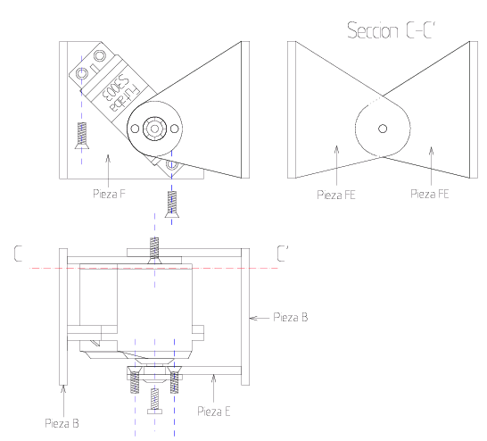
Se ha diseñado un modelo virtual de los módulos Y1, con el programa Blender que es libre y multiplataforma (Linux, Windows...). Con este módulo se pueden construir robots virtuales, para conocer a priori el aspecto que van a tener y poder realizar simulaciones.
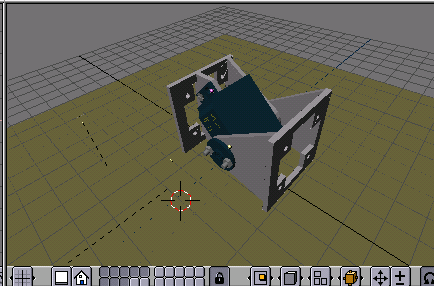
A continuación se muestra el material necesario para la construcción de un módulo:
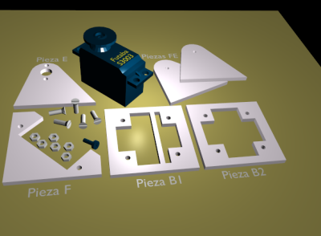
El material necesario es el siguiente:
Un servo Futaba 3003, con la corona de 21mm de diámetro y su tornillo
Dos piezas FE
Una pieza de cada tipo: E, F, B1 y B2
5 tornillos de 3mm de diámetro y 10mm de largo
6 tuercas para esos tornillos
Para construir las piezas se utiliza esta plantilla , que contiene todas lo necesario para la construcción de 2 módulos. Al hacer prototipos, es muy útil imprimir la plantilla en papel de pegatina, pegarlo sobre el material a emplear (pvc expandido, metacrilato, madera...) y cortar las piezas.
Aquí puedes ver con más detalle el proceso de montaje
Realizado como parte del trabajo de iniciación a la investigación (segundo año del doctorado) "Diseño de Robots ápodos". Junio 2003. Escuela Politécnica Superior, Universidad Autónoma de Madrid.
Autor: Juan González Gómez
Tutor: Eduardo Boemo
Se concede permiso para el uso, modificación y distribución tanto de los planos como de los modelos virtuales, siempre que se mantenga esta nota.
Los módulos Y1 están inspirados en la generación G1 de Polybot desarrollado por Mark Yim en el PARC . La idea "clave" de estos módulos es la de su conexión en fase o en desfase. Una idea sencilla pero brillante, que se ha tomado para realizar los módulos Y1, y por ello se han bautizado con la letra Y, (de YIM) y el 1 indica que es la primera generación, siguiendo la misma nomenclatura que en Polybot.
En este vídeo puedes ver un módulo moviéndose. Se encuentra apoyado sobre la base B1 y la cabeza se mueve de un lado a otro. En este otro se pueden ver dos módulos desfasados. Uno se mueve paralelo a la superficie de apoyo y el otro perpendicular.
La conexión en fase se puede ver aquí . Ambos módulos se mueven en un mismo plano, perpendicular a la superficie de apoyo. Y por último aquí puedes ver dos módulos en fase avanzando. Se trata del gusano mínimo que se puede construir :-). La clave del avance está en la coordinación de los dos módulos. Curioso, ¿verdad?
Todos estos vídeos, así como una galería de fotos se pueden bajar de la sección de download
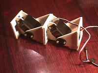
|
PLANOS |
|
Planos QCAD |
Planos PDF |
Descripción |
|
plano1-futabas.dxf (49KB) |
plano1-futabas.pdf (70KB) |
servos Futaba 3003 |
|
plano2-pieza-F.dxf (58KB) |
plano2-pieza-F.pdf (87KB) |
Planos de la Pieza F, a la que se atornilla el servo |
|
plano3-pieza-E.dxf (49KB) |
plano3-pieza-E.pdf (73KB) |
Planos de la Pieza E, atornillada al eje del servo |
|
plano4-piezas-B1-B2.dxf(53KB) |
plano4-piezas-B1-B2.pdf(58KB) |
Planos de las Piezas B1 y B2, base superior e inferior |
|
plano5-pieza-FE.dxf (31KB) |
plano5-pieza-FE.pdf (42KB) |
Planos de la Pieza FE, que constituye el falso eje del módulo |
|
plano6-modulo-1.dxf (61KB) |
plano6-modulo-1.pdf (64KB) |
Plano del módulo montado, con los tornillos necesarios y las cotas |
|
plano7-modulo-2.dxf (45KB) |
plano7-modulo-2.pdf (37KB) |
Planos del módulo. Descriptivo (sin cotas), con servo sombreado |
|
plano8-cube-1.dxf (100KB) |
plano8-cube-1.pdf (55KB) |
4 módulos conectados en fase, constituyendo el gusano Cube Reloaded |
|
plano9-tornillos.dxf (36KB) |
plano9-tornillos.pdf (39KB) |
Tornillos y tuercas empleados |
|
plantillas.dxf (24KB) |
plantillas.pdf (41KB) |
Plantillas para la construcción de 2 módulos |
|
planos-modulo-Y1.zip (72KB) |
------ |
Todos los planos anteriores para QCAD |
|
MODELOS 3D y escenarios |
|
Modelos 3D para Blender |
Imágenes PNG |
Descripción |
|
futaba.blend (64KB) |
fut-virtual1.png (15KB) |
Modelo 3D del Futaba 3003 |
|
piezas.blend(87KB) |
piezas.png(93KB) |
Todas las piezas que componen el módulo Y1 |
|
piezas-futaba3d.png(108KB) |
Escenario con todo lo necesario para hacer el montaje: piezas, tornillos y servo |
|
|
Modulo-Y1.blend(136KB) |
Modulo-Y1.png(66KB) |
Modelo 3D del Módulo Y1 |
|
Modulo-Y-seg2-fase.blend(246KB) |
Escenario con dos módulos Y1, enganchados en fase |
|
|
Modulo-Y1-seg2-desfase.blend(246KB) |
Escenario con dos módulos Y1 desfasados |
|
|
Modulo-Y1-seg4-fase.blend(463KB) |
Escenario con 4 módulos Y1 en fase |
|
MONTAJE |
|
Modelos 3D paraBlender |
Imágenes PNG |
Descripción |
|
Modulo-Y1-montaje1.blend(156KB) |
Modulo-Y1-montaje1.png(95KB) |
Paso 1: Unión de la pieza F y la B1 |
|
Modulo-Y1-montaje2.blend(155KB) |
Modulo-Y1-montaje2.png(96KB) |
Paso 2: Unión de una pieza FE a la base B1 |
|
Modulo-Y1-montaje3.blend(152KB) |
Modulo-Y1-montaje3.png(99KB) |
Paso 3: Unión de la pieza E a la base B2 |
|
Modulo-Y1-montaje4.blend(151KB) |
Modulo-Y1-montaje4.png(97KB) |
Paso 4: Unión de la otra pieza FE a la base B2. |
|
Modulo-Y1-montaje5.blend(145KB) |
Modulo-Y1-montaje5.png(92KB) |
Paso 5: Unión de la corona del servo a la pieza E. |
|
Modulo-Y1-montaje6.blend(139KB) |
Modulo-Y1-montaje6.png(84KB) |
Paso 6: Atornillar el servo a la pieza F. |
|
Modulo-Y1.blend(136KB) |
Modulo-Y1.png(66KB) |
Paso 7: Unir las dos piezas, una al eje del servo y la otra por el falso eje |
|
GALERIA DE FOTOS E IMAGENES |
|
Fotos |
Imágenes |
Descripción |
|
foto1.jpg(50KB) |
Modulo-Y1.png(66KB) |
Módulo Y1, en posición abierta |
|
foto2.jpg(55KB) |
imagen2.png(71KB) |
Módulo Y1, cerrado |
|
foto3.jpg(44KB) |
imagen3.png(64KB) |
Módulo Y1, cerrado. Ángulo contrario |
|
foto4.jpg(50KB) |
imagen4.png(68KB) |
Módulo Y1, abierto. Ángulo contrario |
|
foto5.jpg(64KB) |
Dos módulos conectados en fase |
|
|
foto6.jpg(40KB) |
imagen6.png(80KB) |
Cuatro módulos conectados en fase |
|
VIDEOS |
|
video1.mpg(697KB) |
Un módulo Y1 en movimiento |
|
video2.mpg(855KB) |
Dos módulos desfasados, moviéndose |
|
video3.mpg(1.1MB) |
Dos módulos en fase, moviéndose |
|
video4.mpg(1.2MB) |
Dos módulos en fase, avanzando |
Hacer una animación del Modelo virtual, para que se aprecie cómo se mueve
Controlar el módulo virtual a través del teclado
Animar dos módulos en fase
Animar dos módulos desfasados
Robot Cube Revolutions. Tercera eneración
Cube Reloaded, Segunda generación del robot gusano
Cube 2.0 , un robot gusano. Primera generación
Polybot, un robot modular y reconfigurable
Generación G1 de Polybot
PARC, Palo Alto Research Center
QCAD. Programa libre de diseño 2D.
06/Dic/2009: Página migrada el wiki. Esta versión ya no se mantiene más. Nueva página de los módulos Y1.
8/Abril/2007: Añadidos enlaces a Cube Revolutions.
30/Agosto/2004:
Nuevas versiones de los planos para QCAD2. (Formato DXF 2000). Ahora no deberían dar problemas al abrirlos con Autocad
Añadidos enlaces a Cube Reloaded
12/Agosto/2003: Publicado en esta web
{kind=link}
{kind=link}
{kind=link}
{kind=link}
{kind=link}
{kind=link}
{kind=link}
{kind=link}
{kind=link}
{kind=link}
{kind=link}
{kind=link}
{kind=link}
{kind=link}
{kind=link}
{kind=link}
{kind=link}
{kind=link}
{kind=link}
{kind=link}
{kind=link}
{kind=link}
{kind=link}